|
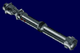 Lightsaber
Miecz ¦wietlny jest potê¿n± broni± i symbolem rycerza Jedi. Mo¿liwa
jest walka jednym mieczem (z trzema stylami ataku), dwoma mieczami lub
mieczem z dwoma ostrzami
Atak - Ró¿nego typu ciêcia i wymachy w zale¿no¶ci od rodzaju miecza
oraz poruszania siê gracza
Alt Atak - Je¿eli gracz posiada moc, mo¿e rzuciæ miecz, który wróci
do rêki rycerza Jedi. Je¿eli gracz posiada dwuostrzowy miecz - nie rzuca
go, lecz kopie, co pozwala przewróciæ przeciwnika
Amunicja - Moc do rzutu mieczem
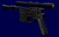 DL-44 Heavy
Blaster Pistol
Ciê¿ki pistolet DL-44 strzela powoli, ale bardzo celnie
Atak - Pojedynczy, powolny strza³
Alt Atak - £adowanie broni, puszczenie spustu wypu¶ci bardzo mocny strza³
Amunicja - Blaster (w Multiplayerze brak)
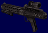 E-11 Blaster Rifle
Karabin Laserowy E-11 jest to podstawowa broñ si³ imperium. Jest ca³kiem
silny, lecz bardzo niecelny
Atak - Wolny, mocny strza³
Alt Atak - Seria szybkich, ma³o celnych pocisków
Amunicja - Blaster (max 300)
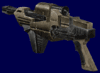 Tenloss Disruptor Rifle
Ta broñ z ³atwo¶ci± zabija wszystkie ¿ywe tkanki. Jest bardzo
wolnostrzelna, jednak bardzo potê¿na
Atak - Szybko poruszaj±cy siê promieñ
Alt Atak - Typ snajperski ! Przytrzymanie w³±cza zbli¿enie i powiêksza
je. Puszczenie zatrzymuje powiêkszanie. Trzymanie ataku ³aduje broñ. Po
puszczeniu ataku - strzela. Naci¶niêcie Alt Ataku wychodzi z trybu
snajperskiego
Amunicja - Power Cell (max 300)
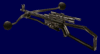 Wookiee Bowcaster
Kusza Wookiech strzela potê¿nymi i szybkimi pociskami energetycznymi
Atak - Strzela pojedynczym pociskiem. Przyczymanie pozwala na
strzelenie trzema lub piêcioma pociskami. Mo¿na atakowaæ wielu
przeciwników naraz
Alt Atak - Strzela szybkim, 3 razy odbijaj±cym siê pociskiem
Amunicja - Power Cell (max 300)
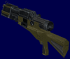 Imperial Heavy Repeater with
concussion launcher
Imperialny ciê¿ki karabin maszynowy z podwieszanym granatnikiem zasypuje
przeciwnika deszczem metalowych pocisków. Jest najbardziej szybkostrzeln±
broni± w ca³ej grze
Atak - Strzela ogromne ilo¶ci pocisków, jednak jest bardzo niecelny
Alt Atak - Wyrzuca potê¿ny granat, wybuchaj±cy przy spotkaniu z
czymkolwiek.
Amunicja - Metalic Bolts (max 400)
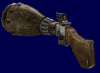 Destructive Electromagnetic Pulse
2 Gun
Destruktywny pulsar elektromagnetyczny strzela wysoko na³adowanymi ³adunkami
jonowymi. Jest bardzo efektywny przeciwko robotom, chocia¿ ¿ywym istotom
te¿ mo¿e zadaæ obra¿enia
Atak - Pojedyñczy pocisk og³uszaj±cy ¿ywych i niszcz±cy droidy
Alt Atak - Strzela jednym z trzech poziomów na³adowania. Przytrzymanie
powoduje ³adowanie broni. Wytwarza kulê energii niszcz±cej wszystko, z
czym siê zetknie. Mo¿na atakowaæ wielu przeciwników naraz
Amunicja - Power Cell (max 300)
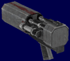 Golan Arms FC-1 Flechette Weapon
Jest potê¿n± broni± dzia³aj±c± podobnie do strzelby
Atak - Zasypuje gradem metalowych, rozgrzanych od³amków, które
odbijaj± siê od ¶cian. Mo¿na atakowaæ wielu przeciwników naraz.
Alt Atak - Wyrzuca dwie bomby, które odbijaj± siê od powierzchni i
wybuchaj± przy kontakcie z przeciwnikiem lub do trzech sekund
Amunicja - Metalic Bolts (max 400)
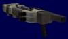 Strouker Concussion Rifle
Bardzo nowoczesna i potê¿na broñ zu¿ywaj±ca niestety ogromne ilo¶ci
amunicji
Atak - Wystrzeliwuje pocisk energetyczny, który po kontakcie wybucha,
zadaj±c powa¿ne obra¿enia
Alt Atak - Pojedynczy szybki strza³ potrafi±cy wyrzuciæ przeciwnika na
du¿± odleg³o¶æ
Amunicja - Power Cell (max 300)
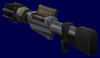 Merr-Sonn PLX-2M Portable Missile
System
"Merr-Sonn PLX-2M" Przeno¶na wyrzutnia rakiet typu Arkayd 3T3
Atak - Wystrzeliwuje pocisk, który leci prosto i wybucha przy
kontakcie
Alt Atak - Przytrzymanie celuj±c na przeciwnika wy¶wietli ko³o. Jego ca³kowite
wype³nienie oznacza zablokowanie pocisku. Puszczenie Alt Ataku wyrzuci
rakietê, która poleci za namierzonym celem
Amunicja - Rakiety (max 10)
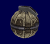 Thermal Detonator
Granat cieplny wybuchaj±c uwalnia ogromne ciep³o zabijaj±ce wszystko w
pobli¿u. Przytrzymanie ataku pozwala na rzucenie granatu na wiêksz±
odleg³o¶æ
Atak - Rzuca granat który wybucha przy kontakcie z przeciwnikiem lub
po krótkim czasie
Alt Atak - Rzuca granat, który wybucha przy kontakcie z czymkolwiek
Amunicja - Granaty (max 10)
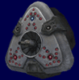 Trip Mine
Mina pu³apka
Atak - K³adzie minê na p³askiej powierzchni. Aktywuje siê promieñ,
który po przerwaniu (przej¶ciu przez niego kogo¶) powoduje wybuch miny
Alt Atak - K³adzie minê, która wybucha przy zbli¿eniu siê do niej
przeciwnika
Amunicja - Miny (max 5)
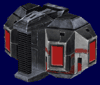 Detonation Pack
£adunki wybuchowe, powoduj±ce bardzo siln± eksplozjê.
Atak - K³adzie ³adunek na p³askiej powierzchni. Je¿eli przed
graczem nie ma p³askiej powierzchni, ³adunek spada na ziemiê
Alt Atak - Detonuje wszystkie ³adunki
Amunicja - £adunki wybuchowe (max 5)
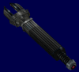 Stun Baton
Paralizator s³u¿y do og³uszania przeciwników. Dostêpny w trybie
multiplayer, gdy nie posiada siê mocy ataku mieczem
Atak - Og³usza przeciwnika w zasiêgu paralizatora
Alt Atak - Og³usza przeciwnika w zasiêgu paralizatora
Amunicja - brak
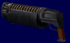 Bryar Blaster Pistol
Pistolet Bryar strzela powoli, ale bardzo celnie.
U¿ywany przez Kyle'a Katharn'a
Atak - Pojedynczy, powolny strza³
Alt Atak - £adowanie broni, puszczenie spustu wypu¶ci bardzo mocny strza³
Amunicja - Blaster (max 300)
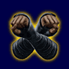 Meele
Walka wrêcz jest dosyæ potê¿na, szczególnie u wookiee'ch, które maj±
bonus w tym typie walki (siege)
Atak - Bije przeciwnika w zasiêgu rêki
Alt Atak - Bije przeciwnika w zasiêgu rêki, lub kopie, w zale¿no¶ci od
poziomu wtajemniczenia
Amunicja - brak
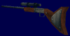 Tusken Rifle
Karabin ludzi pustyni
Atak - Pojedynczy strza³
Alt Atak - Pojedynczy, precyzyjny strza³
snajperski
Amunicja - Nie u¿ywane przez gracza
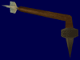 Tusken Staff
Laska ludzi pustyni
Atak - Bije przeciwnika z mo¿liwo¶ci± przewrócenia go
Alt Atak - brak
Amunicja - Nie u¿ywane przez gracza
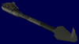 Norghi Stick
Pa³ka Norghi'ch
Atak - Strzela pociskiem uwalniaj±cym chmurê truj±cego gazu
Alt Atak - Bicie pa³k±
Amunicja -Nie u¿ywane przez gracza
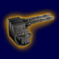 AT-ST Main Cannon
G³ówne dzia³o AT-ST
Atak - Szybki pocisk laserowy zadaj±cy powa¿ne uszkodzenia
Alt Atak - Szybki pocisk laserowy zadaj±cy powa¿ne uszkodzenia
Amunicja - brak
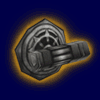 AT-ST Side Cannon
Boczne dzia³o AT-ST
Atak - Wystrzeliwuje pocisk wybuchaj±cy przy kontakcie
Alt Atak - Wystrzeliwuje rakietê Arkayd 3T3, wybuchaj±c± przy kontakcie
Amunicja - Pociski ( ? 100)
do góry
|